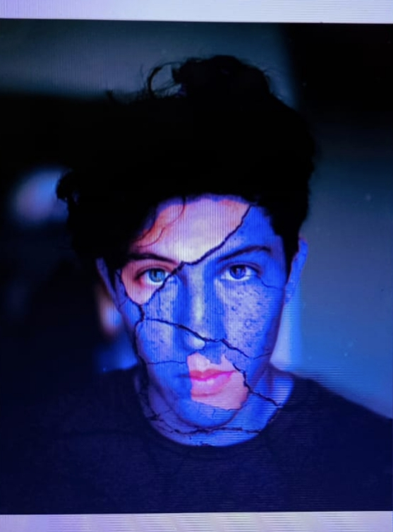
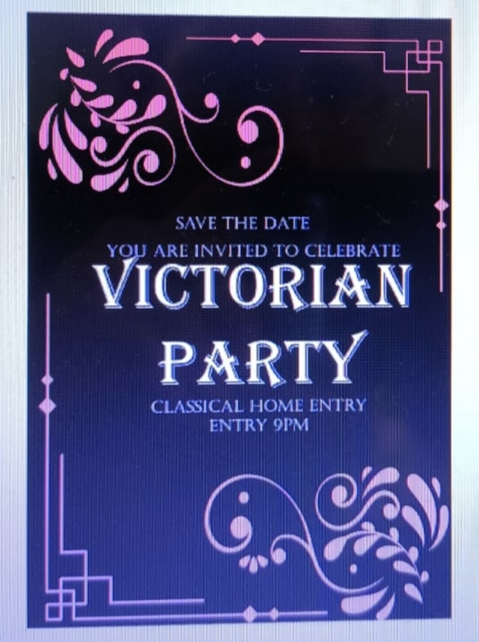
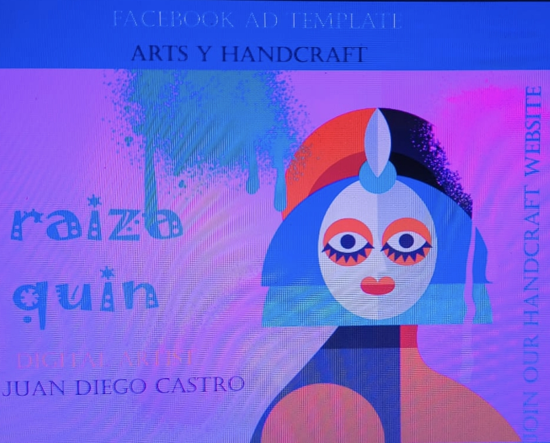
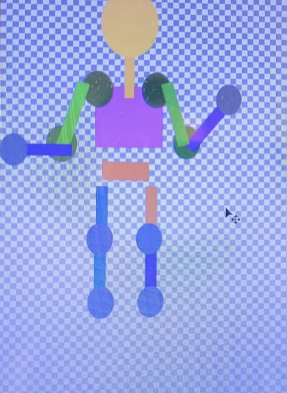
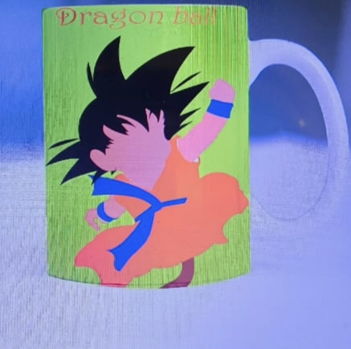

Aprendiz de Integración de Contenidos Digitales
Soy aprendiz SENA del programa Técnico en Integración de Contenidos Digitales.
Me interesa la multimedia, la tecnología y la creación de contenidos digitales.
Ver mis proyectosSoy aprendiz del programa Técnico en Integración de Contenidos Digitales. Durante mi proceso de formación he desarrollado conocimientos relacionados edición de imágenes, producción multimedia, diseño web y creación de contenidos digitales.
Me interesa seguir aprendiendo paraasi poder mejorar en lo que hago y de esta manera mejorarla calidas de mis trabajos
A continuación presento algunos trabajos realizados durante mi proceso de formación.



Algunos trabajos y ejercicios realizados durante mi proceso de formación.

